Chapter 5 Exploratory Data Analysis
Exploratory Data Analysis (EDA) is a term coined by John W. Tukey in his seminal book (Tukey 1977). It is also (arguably) known as Visual Analytics, or Descriptive Statistics. It is the practice of inspecting, and exploring your data, before stating hypotheses, fitting predictors, and other more ambitious inferential goals. It typically includes the computation of simple summary statistics which capture some property of interest in the data, and visualization. EDA can be thought of as an assumption free, purely algorithmic practice.
In this text we present EDA techniques along the following lines:
- How we explore: with summary-statistics, or visually?
- How many variables analyzed simultaneously: univariate, bivariate, or multivariate?
- What type of variable: categorical or continuous?
5.1 Summary Statistics
5.1.1 Categorical Data
Categorical variables do not admit any mathematical operations on them. We cannot sum them, or even sort them. We can only count them. As such, summaries of categorical variables will always start with the counting of the frequency of each category.
5.1.1.1 Summary of Univariate Categorical Data
# Make some data
gender <- c(rep('Boy', 10), rep('Girl', 12))
drink <- c(rep('Coke', 5), rep('Sprite', 3), rep('Coffee', 6), rep('Tea', 7), rep('Water', 1))
age <- sample(c('Young', 'Old'), size = length(gender), replace = TRUE)
# Count frequencies
table(gender)## gender
## Boy Girl
## 10 12table(drink)## drink
## Coffee Coke Sprite Tea Water
## 6 5 3 7 1table(age)## age
## Old Young
## 11 11If instead of the level counts you want the proportions, you can use prop.table
prop.table(table(gender))## gender
## Boy Girl
## 0.4545455 0.54545455.1.1.2 Summary of Bivariate Categorical Data
library(magrittr)
cbind(gender, drink) %>% head # bind vectors into matrix and inspect## gender drink
## [1,] "Boy" "Coke"
## [2,] "Boy" "Coke"
## [3,] "Boy" "Coke"
## [4,] "Boy" "Coke"
## [5,] "Boy" "Coke"
## [6,] "Boy" "Sprite"table1 <- table(gender, drink) # count frequencies of bivariate combinations
table1 ## drink
## gender Coffee Coke Sprite Tea Water
## Boy 2 5 3 0 0
## Girl 4 0 0 7 15.1.1.3 Summary of Multivariate Categorical Data
You may be wondering how does R handle tables with more than two dimensions. It is indeed not trivial to report this in a human-readable way. R offers several solutions: table is easier to compute with, and ftable is human readable.
table2.1 <- table(gender, drink, age) # A machine readable table.
table2.1## , , age = Old
##
## drink
## gender Coffee Coke Sprite Tea Water
## Boy 1 2 1 0 0
## Girl 3 0 0 3 1
##
## , , age = Young
##
## drink
## gender Coffee Coke Sprite Tea Water
## Boy 1 3 2 0 0
## Girl 1 0 0 4 0table.2.2 <- ftable(gender, drink, age) # A human readable table.
table.2.2## age Old Young
## gender drink
## Boy Coffee 1 1
## Coke 2 3
## Sprite 1 2
## Tea 0 0
## Water 0 0
## Girl Coffee 3 1
## Coke 0 0
## Sprite 0 0
## Tea 3 4
## Water 1 0If you want proportions instead of counts, you need to specify the denominator, i.e., the margins. Think: what is the margin in each of the following outputs?
prop.table(table1, margin = 1)## drink
## gender Coffee Coke Sprite Tea Water
## Boy 0.20000000 0.50000000 0.30000000 0.00000000 0.00000000
## Girl 0.33333333 0.00000000 0.00000000 0.58333333 0.08333333prop.table(table1, margin = 2)## drink
## gender Coffee Coke Sprite Tea Water
## Boy 0.3333333 1.0000000 1.0000000 0.0000000 0.0000000
## Girl 0.6666667 0.0000000 0.0000000 1.0000000 1.00000005.1.2 Continous Data
Continuous variables admit many more operations than categorical. We can compute sums, means, quantiles, and more.
5.1.2.1 Summary of Univariate Continuous Data
We distinguish between several types of summaries, each capturing a different property of the data.
5.1.2.2 Summary of Location
Capture the “location” of the data. These include:
The sample mean is non robust. A single large observation may inflate the mean indefinitely. For this reason, we define several other summaries of location, which are more robust, i.e., less affected by “contaminations” of the data.
We start by defining the sample quantiles, themselves not a summary of location.
We emphasize that sample quantiles are non-uniquely defined. See ?quantile for the 9(!) different definitions that R provides.
Using the sample quantiles, we can now define another summary of location, the median.
A whole family of summaries of locations is the alpha trimmed mean.
The simple mean and median are instances of the alpha trimmed mean: \(\bar x_0\) and \(\bar x_{0.5}\) respectively.
Here are the R implementations:
x <- rexp(100) # generate some random data
mean(x) # simple mean## [1] 1.088972median(x) # median## [1] 0.7839536mean(x, trim = 0.2) # alpha trimmed mean with alpha=0.2## [1] 0.81995215.1.2.3 Summary of Scale
The scale of the data, sometimes known as spread, can be thought of its variability.
For reasons of robustness, we define other, more robust, measures of scale.
where \(c\) is some constant, typically set to \(c=1.4826\) so that MAD and \(S(x)\) have the same large sample limit.
Here are the R implementations
sd(x) # standard deviation## [1] 1.068415mad(x) # MAD## [1] 0.7083485IQR(x) # IQR## [1] 0.98698435.1.2.4 Summary of Asymmetry
Summaries of asymmetry, also known as skewness, quantify the departure of the \(x\) from a symmetric sample.
Here is an R implementation
yule <- function(x){
numerator <- 0.5 * (quantile(x,0.75) + quantile(x,0.25))-median(x)
denominator <- 0.5* IQR(x)
c(numerator/denominator, use.names=FALSE)
}
yule(x)## [1] 0.23172225.1.2.5 Summary of Bivariate Continuous Data
When dealing with bivariate, or multivariate data, we can obviously compute univariate summaries for each variable separately. This is not the topic of this section, in which we want to summarize the association between the variables, and not within them.
We emphasize this is not the covariance you learned about in probability classes, since it is not the covariance between two random variables but rather, between two samples. For this reasons, some authors call it the empirical covariance, or sample covariance.
r(x,y), is defined as \[r(x,y):=\frac{Cov(x,y)}{S(x)S(y)}. \]
If you find this definition enigmatic, just think of the correlation as the covariance between \(x\) and \(y\) after transforming each to the unitless scale of z-scores.
We thus have that \(r(x,y)=Cov(z(x),z(y))\).
5.1.2.6 Summary of Multivariate Continuous Data
The covariance is a simple summary of association between two variables, but it certainly may not capture the whole “story” when dealing with more than two variables. The most common summary of multivariate relation, is the covariance matrix, but we warn that only the simplest multivariate relations are fully summarized by this matrix.
5.2 Visualization
Summarizing the information in a variable to a single number clearly conceals much of the story in the sample. This is akin to inspecting a person using a caricature, instead of a picture. Visualizing the data, when possible, is more informative.
5.2.1 Categorical Data
Recalling that with categorical variables we can only count the frequency of each level, the plotting of such variables are typically variations on the bar plot.
5.2.1.1 Visualizing Univariate Categorical Data
barplot(table(age))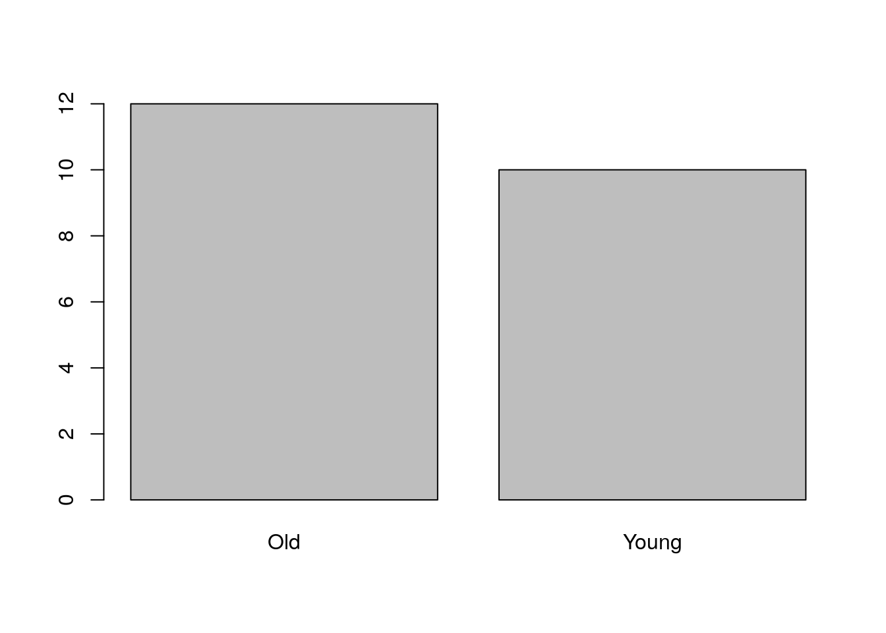
5.2.1.2 Visualizing Bivariate Categorical Data
There are several generalizations of the barplot, aimed to deal with the visualization of bivariate categorical data. They are sometimes known as the clustered bar plot and the stacked bar plot. In this text, we advocate the use of the mosaic plot which is also the default in R.
plot(table1, main='Bivariate mosaic plot')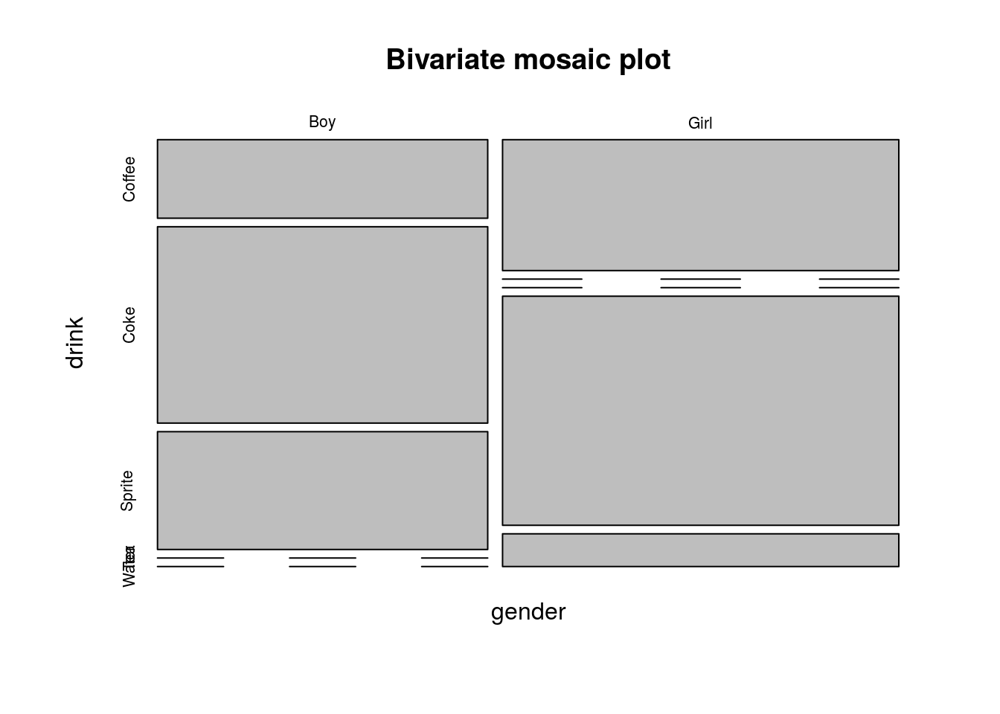
5.2.1.3 Visualizing Multivariate Categorical Data
The mosaic plot is not easy to generalize to more than two variables, but it is still possible (at the cost of interpretability).
plot(table2.1, main='Trivaraite mosaic plot')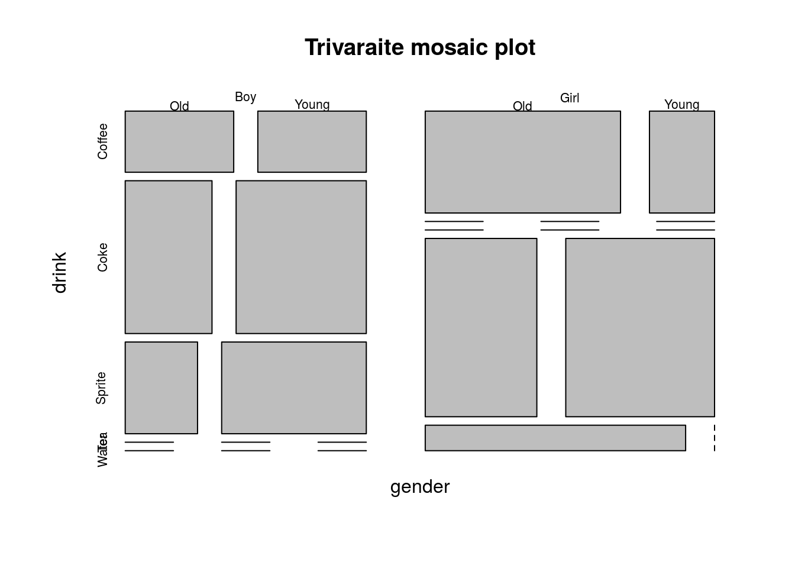
5.2.2 Continuous Data
5.2.2.1 Visualizing Univariate Continuous Data
Unlike categorical variables, there are endlessly many way to visualize continuous variables. The simplest way is to look at the raw data via the stripchart.
sample1 <- rexp(10)
stripchart(sample1)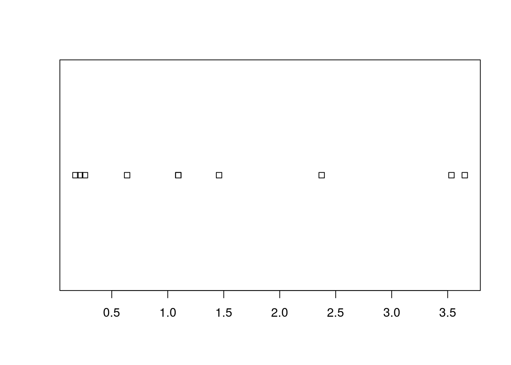
Clearly, if there are many observations, the stripchart will be a useless line of black dots. We thus bin them together, and look at the frequency of each bin; this is the histogram. R’s histogram function has very good defaults to choose the number of bins. Here is a histogram showing the counts of each bin.
sample1 <- rexp(100)
hist(sample1, freq=T, main='Counts') 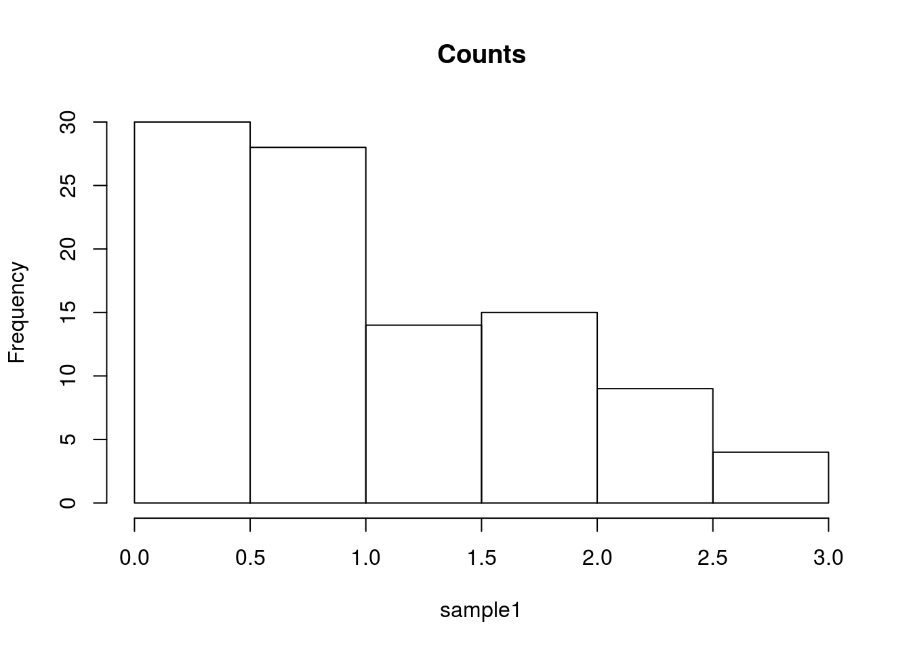
The bin counts can be replaced with the proportion of each bin using the freq argument.
hist(sample1, freq=F, main='Proportion') 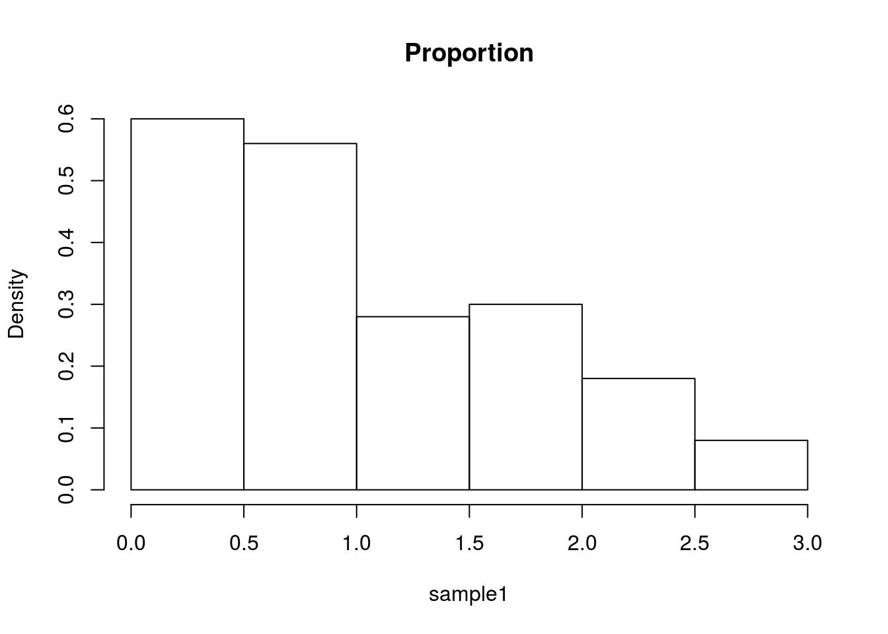
The bins of a histogram are non overlapping. We can adopt a sliding window approach, instead of binning. This is the density plot which is produced with the density function, and added to an existing plot with the lines function. The rug function adds the original data points as ticks on the axes, and is strongly recommended to detect artifacts introduced by the binning of the histogram, or the smoothing of the density plot.
hist(sample1, freq=F, main='Frequencies')
lines(density(sample1))
rug(sample1)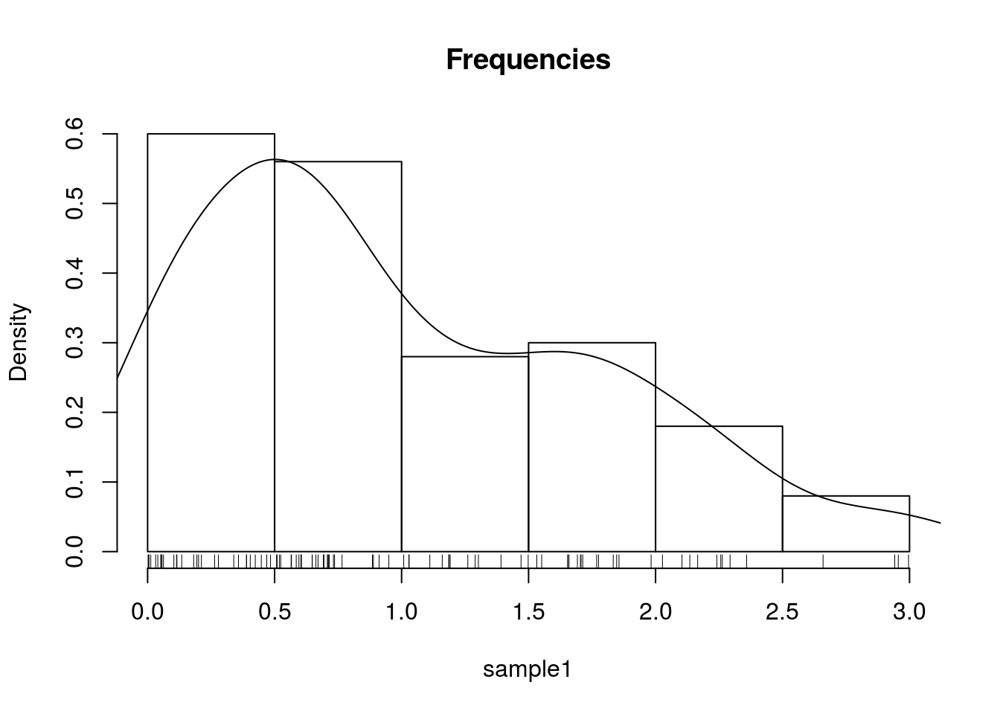
One particularly useful visualization, due to John W. Tukey, is the boxplot. The boxplot is designed to capture the main phenomena in the data, and simultaneously point to outlines.
boxplot(sample1) 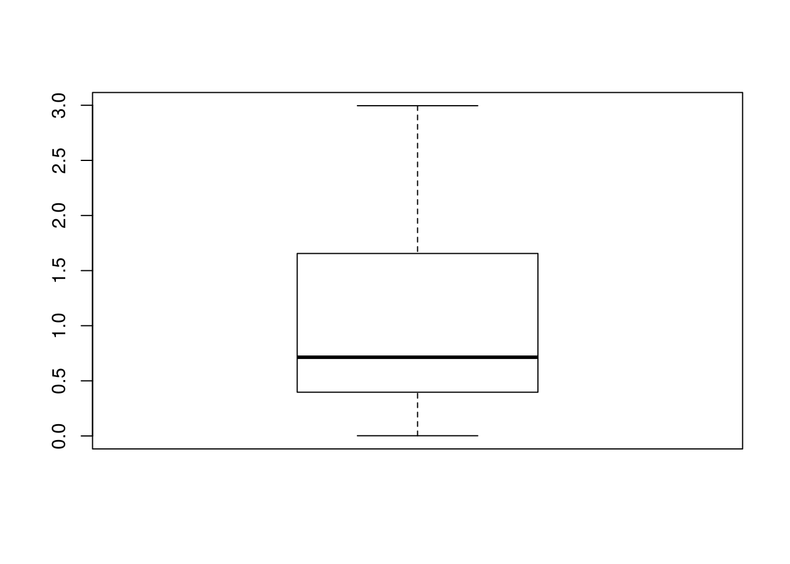
5.2.2.2 Visualizing Bivariate Continuous Data
The bivariate counterpart of the stipchart is the celebrated scatter plot.
n <- 20
x1 <- rexp(n)
x2 <- 2* x1 + 4 + rexp(n)
plot(x2~x1)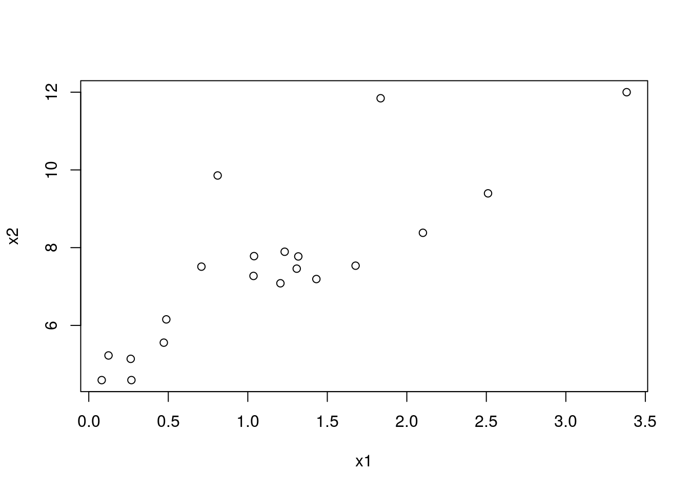
Like the univariate stripchart, the scatter plot will be an uninformative mess in the presence of a lot of data. A nice bivariate counterpart of the univariate histogram is the hexbin plot, which tessellates the plane with hexagons, and reports their frequencies.
library(hexbin) # load required library
n <- 2e5
x1 <- rexp(n)
x2 <- 2* x1 + 4 + rnorm(n)
plot(hexbin(x = x1, y = x2))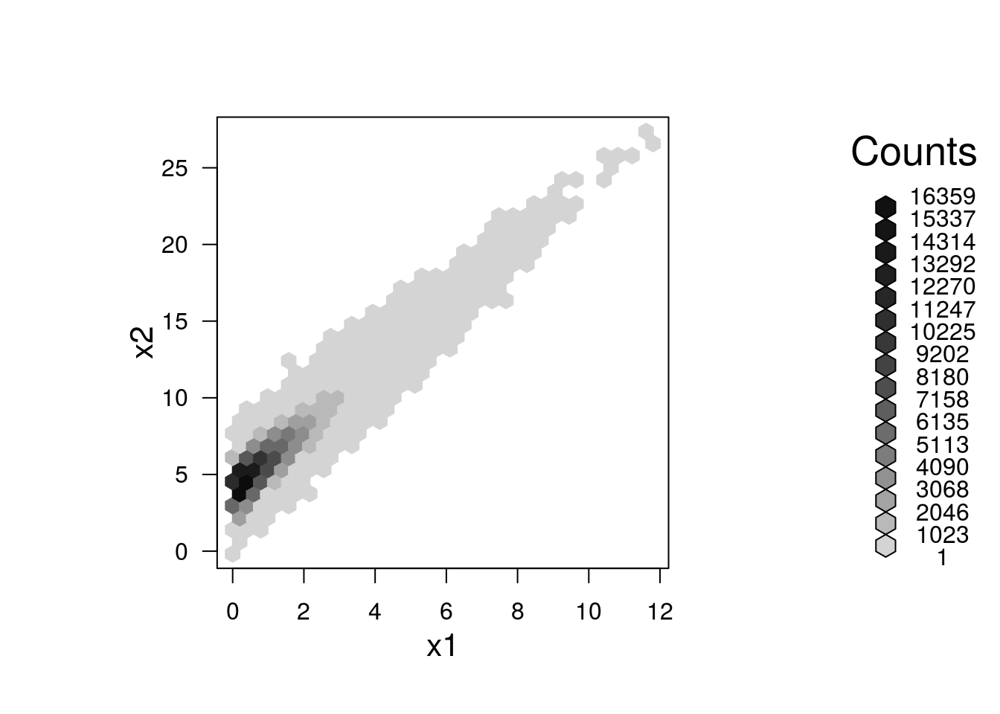
5.2.2.3 Visualizing Multivariate Continuous Data
Visualizing multivariate data is a tremendous challenge given that we cannot grasp \(4\) dimensional spaces, nor can the computer screen present more than \(2\) dimensional spaces. We thus have several options: (i) To project the data to 2D. This is discussed in the Dimensionality Reduction Section ??. (ii) To visualize not the raw data, but rather its summaries, like the covariance matrix.
Since the covariance matrix, \(\hat \Sigma\) is a matrix, it can be visualized as an image. Note the use of the :: operator, which is used to call a function from some package, without loading the whole package. We will use the :: operator when we want to emphasize the package of origin of a function.
covariance <- cov(longley) # The covariance of the longley dataset
correlations <- cor(longley) # The correlations of the longley dataset
lattice::levelplot(correlations)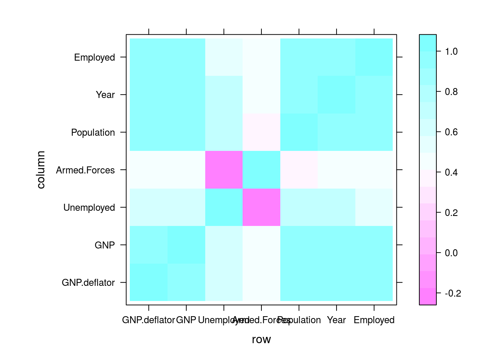
5.2.2.4 Parallel Coordinate Plots
TODO
5.3 Mixed Type Data
Most real data sets will be of mixed type: both categorical and continous. One approach to view such data, is to visualize the continous variables separatly, for each level of the categorical variables. There are, however, interesting dedicated visualization for such data.
5.3.1 Alluvian Diagram
An Alluvian plot is a type of Parallel Coordinate Plot for multivariate categorical data. It is particularly interesting when the \(x\) axis is a discretized time variable, and it is used to visualize flow.
The following example, from the ggalluvial package Vignette by Jason Cory Brunson, demonstrates the flow of students between different majors, as semesters evolve.
library(ggalluvial)
data(majors)
majors$curriculum <- as.factor(majors$curriculum)
ggplot(majors,
aes(x = semester, stratum = curriculum, alluvium = student,
fill = curriculum, label = curriculum)) +
scale_fill_brewer(type = "qual", palette = "Set2") +
geom_flow(stat = "alluvium", lode.guidance = "rightleft",
color = "darkgray") +
geom_stratum() +
theme(legend.position = "bottom") +
ggtitle("student curricula across several semesters")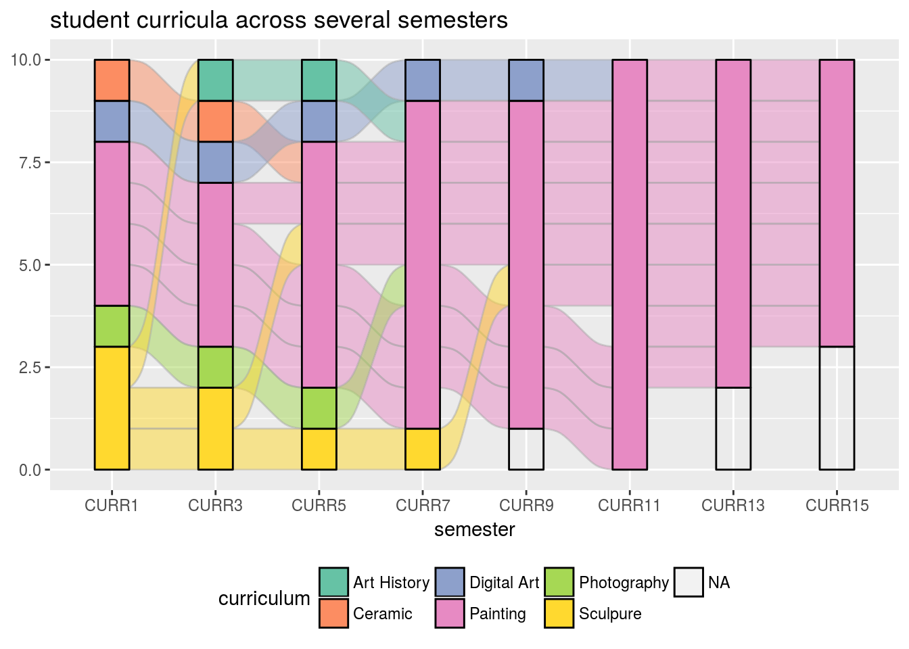
Things to note:
- We used the galluvian package of the ggplot2 ecosystem. More on ggplot2 in the Plotting Chapter.
- Time is on the \(x\) axis. Categories are color coded.
5.4 Bibliographic Notes
Like any other topic in this book, you can consult Venables and Ripley (2013). The seminal book on EDA, written long before R was around, is Tukey (1977). For an excellent text on robust statistics see Wilcox (2011).
5.5 Practice Yourself
Read about the Titanic data set using
?Titanic. Inspect it with thetableand with theftablecommands. Which do you prefer?Inspect the Titanic data with a plot. Start with
plot(Titanic)Try alsolattice::dotplot. Which is the passenger category with most survivors? Which plot do you prefer? Which scales better to more categories?- Read about the women data using
?women.- Compute the average of each variable. What is the average of the heights?
- Plot a histogram of the heights. Add ticks using
rug. - Plot a boxplot of the weights.
- Plot the heights and weights using a scatter plot. Add ticks using
rug.
Choose \(\alpha\) to define a new symmetry measure: \(1/2(x_\alpha+x_{1-\alpha})-x_{0.5}\). Write a function that computes it, and apply it on women’s heights data.
Compute the covariance matrix of women’s heights and weights. Compute the correlation matrix. View the correlation matrix as an image using
lattice::levelplot.Pick a dataset with two LONG continous variables from
?datasets. Plot it usinghexbin::hexbin.
References
Tukey, John W. 1977. Exploratory Data Analysis. Reading, Mass.
Venables, William N, and Brian D Ripley. 2013. Modern Applied Statistics with S-Plus. Springer Science & Business Media.
Wilcox, Rand R. 2011. Introduction to Robust Estimation and Hypothesis Testing. Academic Press.